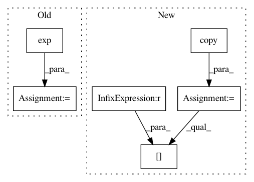

b0fbaafddcb5a67eb3e4e093974c546324ccb5d0,pyglmnet/pyglmnet.py,,_mu,#Any#Any#Any#Any#,93
Before Change
def _mu(distr, z, eta, fit_intercept):
The non-linearity (inverse link).
if distr in ["softplus", "gamma", "neg-binomial"]:
mu = log1p(np.exp(z))
elif distr == "poisson":
mu = z.copy()
beta0 = (1 - eta) * np.exp(eta) if fit_intercept else 0.
mu[z > eta] = z[z > eta] * np.exp(eta) + beta0
After Change
// Numerically stable for larger z. We add a small value to
// prevent zeros.
// https://cran.r-project.org/web/packages/Rmpfr/vignettes/log1mexp-note.pdf
mu = z.copy()
mu[z <= 1] = log1p(np.exp(z[z <= 1]))
mu[z > 1] = (z[z > 1] + log1p(np.exp(-z[z > 1]))) + 1 * 10e-10
elif distr == "poisson":
mu = z.copy()
In pattern: SUPERPATTERN
Frequency: 3
Non-data size: 6
Instances
Project Name: glm-tools/pyglmnet
Commit Name: b0fbaafddcb5a67eb3e4e093974c546324ccb5d0
Time: 2020-08-16
Author: giovanni.det@gmail.com
File Name: pyglmnet/pyglmnet.py
Class Name:
Method Name: _mu
Project Name: pymc-devs/pymc3
Commit Name: 120e438fcd6357fc81a979d92b39b2bd7101dd34
Time: 2013-05-05
Author: chris.fonnesbeck@vanderbilt.edu
File Name: pymc/step_methods/metropolis.py
Class Name: BinaryMetropolis
Method Name: astep
Project Name: pymc-devs/pymc3
Commit Name: d3443536f3d4e39d5e0b8f90e1f9d0e25af77713
Time: 2013-05-06
Author: chris.fonnesbeck@vanderbilt.edu
File Name: pymc/step_methods/metropolis.py
Class Name: BinaryMetropolis
Method Name: astep